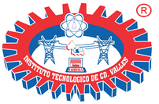

Un proyecto para identificar, proteger y conservar el maíz nativo de la Huasteca Potosina usando tecnología, ciencia y el saber de las comunidades.
PROYECTO DE INVESTIGACIÓN · 2025 – 2026
↓ leer más
En la Huasteca Potosina, muchas familias campesinas e indígenas llevan generaciones sembrando maíces propios: granos de colores, sabores y formas únicos que sus abuelos les enseñaron a cuidar.
Estos maíces son un tesoro. Pero hoy están en peligro. El campo se está abandonando, el clima está cambiando y las semillas industriales están ocupando su lugar.
"Necesitamos saber exactamente dónde están esos maíces, quién los cuida y qué amenazas enfrentan — para poder protegerlos a tiempo."
Por eso un equipo de investigadores del Instituto Tecnológico de Ciudad Valles está construyendo una agroplataforma digital: un mapa y base de datos vivos que registra todo sobre el maíz nativo de la región.
La agricultura industrial, las semillas transgénicas, el cambio climático y el abandono del campo amenazan siglos de conocimiento y diversidad que no se pueden recuperar una vez perdidos.
Un sistema digital que combina mapas satelitales, visitas de campo y el conocimiento de las comunidades para identificar dónde están los maíces nativos y qué necesitan para sobrevivir.
El proyecto trabaja en cuatro grandes pasos que combinan tecnología y trabajo con las comunidades:
El equipo visita al menos 15 localidades para hacer entrevistas, encuestas y registros con GPS. También se usan drones y satélites para ver cómo está la tierra y los cultivos desde arriba.
Cada dato — desde el nombre de una variedad en náhuatl hasta la ubicación exacta de una parcela — se guarda en una base de datos segura que nadie puede perder.
Se crea una página web con mapas interactivos donde cualquier persona puede ver dónde se siembra maíz nativo, qué amenazas tiene cada zona y qué variedades existen.
Se hacen talleres en las propias comunidades para enseñar a usar la plataforma, interpretar los mapas y participar en el cuidado del maíz nativo. El conocimiento es de todos.
La plataforma monitorea y registra estas amenazas en tiempo real para poder actuar antes de que sea tarde.
El proyecto avanza en dos etapas. Ahora mismo estamos en la primera: saliendo a campo y construyendo la base de datos.
Los resultados de este proyecto van a beneficiar directamente a las comunidades, a los investigadores y a las autoridades que toman decisiones sobre el campo.
Un mapa digital actualizado que muestra dónde se siembra cada variedad, quién la cuida y en qué estado se encuentra.
Cada variedad queda documentada: su nombre en lengua originaria, sus características, su valor nutrimental y quién la conserva.
Analizamos en laboratorio qué tanto hierro, proteína, vitaminas y antioxidantes tienen los maíces nativos — muchas veces más que el maíz industrial.
Los mapas y datos sirven para que el gobierno y las organizaciones tomen mejores decisiones sobre conservación y apoyo al campo.
La plataforma funcionará aunque la conexión a internet sea lenta, para que pueda usarse en zonas rurales sin problema.
Estudiantes de la región participan en el proyecto haciendo residencias, tesis y talleres — aprendiendo a cuidar su territorio con ciencia.
Un equipo de once investigadoras e investigadores del IT Ciudad Valles y otras instituciones, con especialidades que van de la computación a la agroecología, pasando por nutrición, fitopatología, ciencias ambientales y saberes comunitarios.
Este proyecto es de todos. Las semillas, el conocimiento y la tierra son patrimonio de las comunidades. Necesitamos tu participación para que funcione de verdad.
Comparte tu conocimiento sobre las variedades que siembras, sus nombres, cómo las cuidas y qué problemas has visto. Tu saber es parte de la investigación.
Hay oportunidades de residencia profesional y tesis de maestría. Aprende a usar drones, satélites, SIG y plataformas digitales al servicio de tu comunidad.
Organizaciones civiles, municipios y grupos comunitarios pueden vincularse para ampliar el alcance del proyecto y co-construir las estrategias de conservación.
Hay espacio para colaboración académica, intercambio de datos y publicaciones conjuntas en agroecología, SIG, nutrición o sistemas computacionales.
Si participas en el proyecto, solo guardamos lo necesario para cuidar el maíz nativo. Tú decides qué compartir y en todo momento puedes consultar tus datos.
Las coordenadas GPS de donde siembras, para poner tu milpa en el mapa de conservación.
Incluyendo el nombre en tu lengua originaria, el color del grano y cuántos años llevas sembrándola.
Solo nombre, municipio y años de experiencia. Sin datos bancarios, CURP ni información sensible.
Con tu permiso, fotos de la milpa y la mazorca para documentar la diversidad visual del maíz nativo.
Tipo de suelo, si hay sequía, plagas o heladas — para entender cómo el clima afecta tus cultivos.
Lo que sabes sobre cómo seleccionar semilla, cuándo sembrar y qué rituales acompañan al maíz — si quieres compartirlo.
Estas son las dudas que más nos preguntan cuando visitamos las comunidades. Si tienes otra, escríbenos.
Escanea este código con tu celular para ver la información técnica completa del proyecto: objetivos, equipo, arquitectura de datos y cómo colaborar.
agroplataforma-maiz-nativo.tecvalles.mx